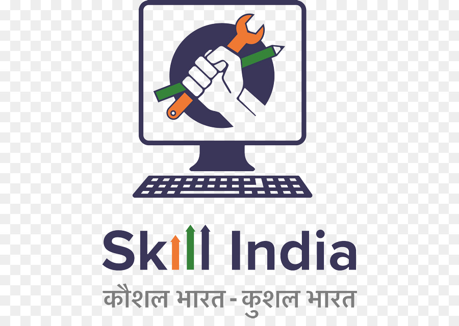
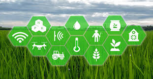
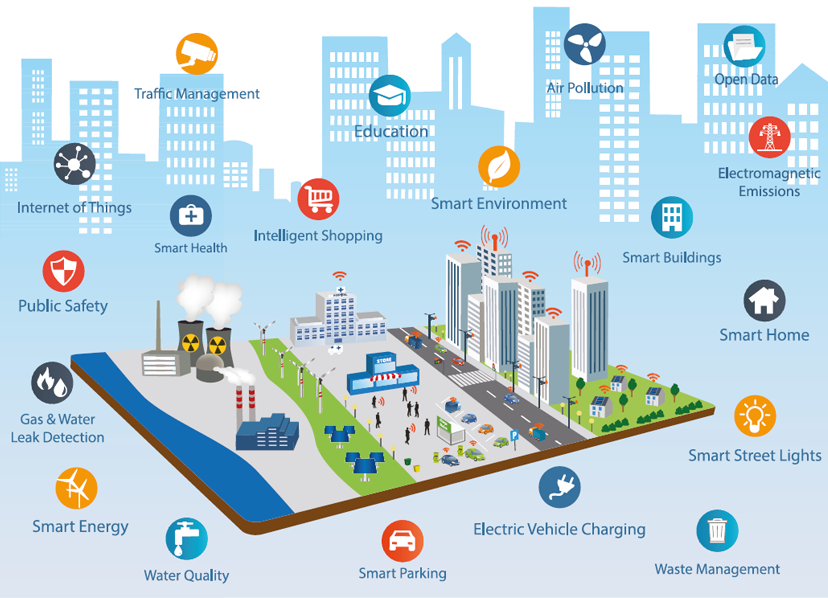
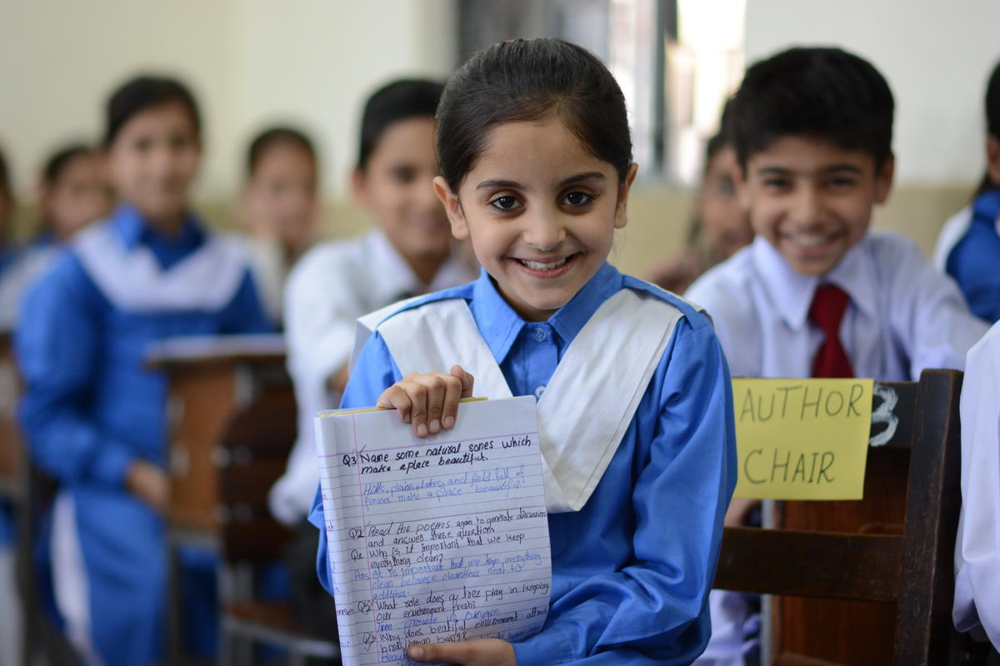
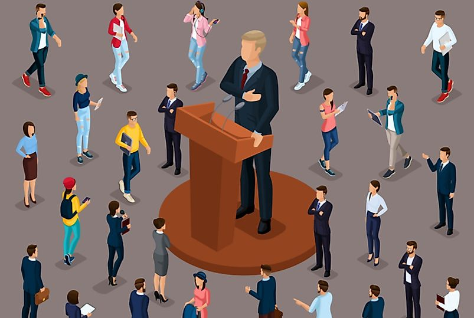

As a continuing government, we will build on the foundations laid out in the last ve years in terms of
reestablishing macro-economic stability, building long-term frameworks of governance, raising India's
international stature, introducing a non-nonsense approach to internal/external security, upgrading the
stock of physical/social infrastructure and, most impoantly, building a basic safety net for the deprived
section of our society. We have demonstrated what all can be achieved by a commied and decisive
leadership that is not afraid to take hard decisions.
In the next ve years, we promise to create growth oppounities for all citizens in every aspect of life. Sab ka
Saath, Sab ka Vikas remains our guiding principle. We intend to reach out to a developed future while
retaining our civilisational roots
In order to achieve our long-term goals, we must rst secure our country against internal and external
aggression. These threats need to be dealt with at their roots and our decisive leadership that will equip our
security apparatus with all the necessary tools. As we have already demonstrated, we intend to use our
foreign policy, were necessary, in order to tackle the problem of global terrorism. Thus, we intend to
increase the strength of our diplomatic and allied cadres. We will also build on the “Make in India in Defence”
initiative to fuher indigenise our defense equipment.
In the last ve years, we re-imposed macro-economic stability while building lasting frameworks for
economic governance. These frameworks include the Insolvency & Bankruptcy Code, ination-targeting,
nationwide Goods & Services Tax, and the banking sector clean-up. These eos have not only changed
the business culture of the country and anchored ination at 4 percent, but have also been internationally
recognized with a sovereign rating upgrade and a sharp rise in our Ease of Doing Business ranking. We will
ensure that India remains the world's fastest growing major economy
in future while maintaining macrostability. We aspire to be the world's third largest economy by 2030.
Since our economic model is based on entrepreneurship and innovation, we commit to simplifying and
lowing tax rates. An impoant aspect of the ease of doing business is the ability to enforce contracts and
resolve disputes. Therefore, we promise to signicantly increase the capacity of the legal system within ve
years in panership/co-ordination with the judiciary.
The physical infrastructure of the country has undergone an unprecedented upgrade in the last ve years.
We have connected 91% of villages with rural roads, electried 100% of villages, operationalized 36 new
airpos and introduced metro networks in several cities. Looking ahead, we plan to build 60,000 km of
National Highways, connect 100% of villages with rural roads, operationalize 100 new airpos, modernize
400 railway stations, and cover 50 cities with metro networks.
Agriculture employs a large propoion of our labour force. In order to ensure remunerative prices for
farmers, the minimum suppo price for 22 crops was increased to 1.5 times cost of production. In addition,
we have curbed the large-scale diversion of subsidized farm inputs through measures like Neem-coating
of urea, rolled out electronic National Agriculture Market (e-NAM), provided insurance cover to 14 crore
farmers under the Pradhan Mantri Fasal Bima Yojana and, most recently, introduced direct income suppo
for 12 crore farming families through the Pradhan Mantri Kisan Samman Nidhi. In the next ve years, we will
create a National Warehousing Grid, invest Rs25 lakh crores in farm/rural productivity, introduce interestfree
Kisan Credit Cards and extend the Pradhan Mantri Kisan Samman Nidhi to all farmers. We remain
commied to the promise of doubling farmer incomes by 2022 and more resources will be made available if
necessary.
In the last ve years, we have created a national common market for the industry and services sectors. By
lowering ination and cleaning up the banking system, we are now in a position to structurally lower the real
cost of capital. This is key to a sustained increase in private sector investment. We intend to establish a
National Traders' Welfare Board as well as announce a National Policy for Retail Trade. The tourism sector will
be a special focus. We will make sure that all UNESCO World Heritage Sites in India have facilities of
international standard. We will also identify and promote specic sites of cultural/natural impoance as a
national priority (while being sensitive to their preservation).
The cultural, ecological and social capital of a country are just as impoant as its economic capital. These
too need continuous investment and we intend to expand suppo for protecting cultural/linguistic
heritage, conserving sites of ecological/historical impoance, and promoting our civilizational ideas both
internationally and to the next generation. We reiterate our stand to explore all possibilities within the
framework of the Constitution to facilitate the construction of a Ram Temple in Ayodhya.
We remain commied to ensuring the benets of constitutional provisions to the Scheduled Castes,
Scheduled Tribes and backward classes. We recently introduced a fuher 10% reservation for the
economically backward sections of the non-reserved category. At the same time, we will expeditiously
complete the National Registration of Citizens in Assam and actively consider its extension to other states.
Every society progresses through the empowerment of women, inclusion of minorities and the
encouragement of youth. We will not allow these objectives to be held back by the politics of appeasement.
Therefore, we hope to modernize personal laws to prohibit practices such as Talaq-e-Biddat and Nikah
Halala. We intend to invest in our human potential by focusing on the quality of our primary/secondary
schools as well as expanding our teiary education capacity. In addition, we will also invest in a select set of
universities and research institutions in order make them world class.
For three generations, India's socio-economic system was held hostage to dynastic perpetuation. This
propagated a corrupt, self-servicing system of political patronage that came to pervade every aspect of
life in India. In 2014, the country voted decisively to end this system. Under the leadership of PM Modi, every
eo has been made to re-establish probity in public life, introduce transparency in policy-making and in
the management of national assets as well as to bring oenders to book.
The above summary is based on the vision of Prime Minister Modi to build a technologically modern,
entrepreneurial, rules-based economy that is secure from external/internal security threats and
simultaneously able to build on its cultural, ecological and social assets.

The decisive leadership of Prime Minister Shri Narendra Modi has fundamentally altered the national security paradigm of India in the last ve years. Looking ahead, we propose to do the following:
Our security doctrine will be guided by our national security interest only. This is exemplied by the Surgical Strikes and the Air Strikes carried out recently. We will rmly continue our policy of ‘Zero Tolerance’ against terrorism and extremism and will continue to follow our policy of giving a free hand to our security forces in combating terrorism
Strengthening our Armed Forces - We will speed up the purchases of outstanding defense related
equipments and weapons. In order to equip the Armed Forces with modern equipment, we will
continue to take focused steps to strengthen the strike capability of the Armed Forces.
Self-reliance in defence sector - In order to ensure self-reliance in procurement of defence
equipment, we have taken several eective steps in the last ve years. For instance, the most modern
AK-203 automatic ries are being manufactured at Amethi under our 'Make in India in Defence'
initiative. We are commied to focus on 'Make in India in Defence' to enable indigenous production of
defence equipment. This will also generate employment and encourage investment in the defence
sector.
We have already demonstrated our commitment to the welfare of our veterans with the implementation of long delayed OROP. To take this commitment forward, we promise to create a more eective framework for the reselement of our Armed Forces veterans. Under this eo, the Armed Forces will sta planning for the reselement of soldiers three years before their retirement and in accordance with their preferences. This will include provision for skills training, so skills training, nancial suppo for higher education, for housing and for staing an enterprise.
We will continue to take forward the process of modernizing the Central Armed Police Forces to
fuher increase their capacity and readiness and enable them to eectively combat internal security
challenges.
We will provide assistance to the states to upgrade their police forces through the ‘Scheme for
Modernization of Police Forces’. We will encourage expedited police reforms in the states so as to
enable the State police forces to deal with new types of crimes like cyber crime and help them to be
more sensitive to the citizens, especially the weak and vulnerable sections of the society
There has been a huge change in the cultural and linguistic identity of some areas due to illegal
immigration, resulting in an adverse impact on local people's livelihood and employment. We will
expeditiously complete the National Register of Citizens process in these areas on priority. In future we
will implement the NRC in a phased manner in other pas of the country
We will continue to undeake eective steps to prevent illegal immigration in the Noheastern states.
For this, we will fuher strengthen our border security. A pilot project on the use of technology to
strengthen border security (Sma Fencing) was implemented in Dhubri (Assam). We will implement
this on all borders.
We will focus on creation of developmental and other necessary infrastructure in border areas to
ensure that border security is strengthened, and to enable increased paicipation of and benets for
border areas in the country’s development and progress.
We have completed building six integrated check-posts with another under construction to facilitate
easier trade and travel from the neighboring countries. We will fuher ease the movement of goods
and people by constructing 14 more integrated check-posts by 2024. Aer completion of all the
proposed integrated check-posts, all trade movement with Bangladesh, Nepal and Bhutan will be
conducted through the integrated check-posts
Aer eectively strengthening coastal security through implementation of a coastal security scheme to provide modern equipment and allocating funds to the states for establishing coastal police stations, establishment of National Commiee for Strengthening Maritime & Coastal Security, Island Information System and National Academy of Coastal Policing, we will continue to take steps for ensuring security of India’s long coastline.
At the very beginning of our current term, Prime Minister Modi embarked on a mission to double farmers’ income. We will make all eos to achieve this goal by 2022.
Pradhan Mantri Kisan Samman Nidhi Yojana to all - We have launched Pradhan Mantri Kisan
Samman Nidhi Yojana to ensure nancial suppo to farmers owning land up to 2 hectares. We will
fuher expand the coverage of the scheme to all the farmers in the country.
Pension for small and marginal farmers - We will launch a pension scheme for all small and marginal
farmers in the country so as to ensure social security to them on reaching 60 years of age.
₹25 lakh crore investment in Agri-rural sector - We are commied to making an investment of Rs.
25 lakh crore to improve the productivity of the farm sector.
Interest-free Kisan Credit Card loans - We will provide sho-term new agriculture loans up to Rs. 1
lakh at a 0% interest rate for 1-5 years on the condition of prompt repayment of the principal amount.
Voluntary enrollment in Pradhan Mantri Fasal Bima Yojana - Our scheme, Pradhan Mantri Fasal
Bima Yojana has ensured risk mitigation and provided insurance cover for all farmers. We will make
enrolment of farmers under the scheme voluntary.
Empowering Farmers through Policies - We will work towards reducing all agricultural impos and
institute a predictable expo and impo policy with a built-in mechanism for encouraging expos
and discouraging impos.
Assurance of Quality Seeds - We will ensure timely availability of improved seeds of promising
varieties at aordable rates with doorstep testing facilities
We will create a mobile app based system for promoting the availability of agri-implements on
rental/custom hiring basis.
We view solar energy as an additional source of income for farmers and will encourage solar farming
on a massive scale so as to enable the ‘Annadaata’(food provider) to become ‘Urja-daata’ (energy
provider).
We will extensively use technology to ensure a beer knowledge of the market prices of various agroproducts for
the benet of farmers.
We will enable development of young agri-scientists to take advantage of Aicial Intelligence,
Machine Learning, Blockchain technology, Big Data analytics etc. for more predictive and protable
precision agriculture
Digitization of Land Records - On the lines of Aadhaar project, we will complete digitization of land
records on a mission mode. We will implement second-generation land reforms to ensure title
guarantee for the landholder and reduce land-related litigation. We will create a model law for
conclusive titling (in consultation with states) promoting title guarantee and title insurance and work
with States to implement this system.

Gram Swaraj is one of the principal pillars of Mahatma Gandhi’s vision of India. As we approach the
150th bih anniversary of Mahatma Gandhi, Bharatiya Janata Pay resolves to realize his vision of
Gram Swaraj by ensuring that everyone has equitable access to resources. As India reaches the
dening milestone of the 75th year of its independence in 2022, we pledge to adopt the ideals of Gram
Swaraj as envisaged by Mahatma Gandhi. In line with this vision we promise
India was branded as ‘fragile ve’ in 2014. Within ve years, we have turned India into a bright spot that
is not only the fastest growing major economy of the world but also enjoys macroeconomic stability.
We have already become the world’s sixth largest economy and will soon be among the top ve. We
aspire to make India the third largest economy of the world by 2030. This implies that we commit to
make India a US $ 5 trillion economy by 2025 and US $ 10 trillion economy by 2032.
When compared to all governments post-1991, this government has delivered the highest rate of
average GDP growth (7.3%) over the last ve years and maintained lowest rate of average consumer
ination (4.6%). The consumer ination is presently at 2.6%. This has been achieved with lower scal
decits and signicantly lower current account decit as a percentage of GDP. Average scal decit
as a percentage of GDP during 2014-19 has been brought down to 3.7% from 5.4% during 2009-14.
Reduction in scal decit of this order implies less burden of debt on future generations by almost
Rs.16 lakh crores. Average Current account decit as a percentage of GDP during this government has
been reduced to 1.5% from 3.3% during 2009-14.
Our economic policy has been guided by the principle of lowering the tax rate and improving compliance; thereby broadening of the tax base. With improved compliance and increased tax base, the tax to GDP ratio has reached 12%, highest in the recent past, up from 10.1% in 2013-14. This increased revenue has been deployed for benets to the poor and creation of infrastructure at an unprecedented level. We will continue with our policy in the similar manner – lowering of tax rate thereby rewarding honest tax payers and improving compliance
Goods and Service Tax (GST) has resulted in overall lowering of tax rates and increased revenue collection, paicularly for States. When compared to base year of 2015-16, GST revenue for all states have increased by 50% in three years. We will continue with the simplication of GST process by engaging in dialogue with all stakeholders.
A special package was launched by the Government to boost the MSME sector. The Credit Guarantee
Scheme of the Government of India is an impoant component wherein loans to MSME are
guaranteed. Under this alone, the credit of around Rs.19,000 crore was achieved in 2017-18. We would
aim to take this gure to Rs.1,00,000 crore by 2024.
Technology access and upgradation are key elements in the MSME sector. Our government has taken
a major step in expanding of ‘Technology Centres’ and we would achieve more than 150 such centres
all over the country by 2024. These Technology Centres would help in mentoring skilling and prototyping of
MSMEs. They will expose MSMEs to Aicial Intelligence, Robotics, Internet of Things, Viual
Reality, BlockChain technology and Zero Defect Zero Eect.
The Technology Centres, other skilling centres of MSMEs and NSICs incubation centres alone would
provide focussed and high level skilling to more than 6 lakh people per year.
Welfare of Small Traders -
To protect the interests of small traders, we will provide an accident insurance of 10 lakh rupees to
all the traders registered under GST.
On the lines of Kisan credit card, we will also create a scheme to give merchant credit card to
registered merchants.
We will establish National Traders’ Welfare Board and create a National Policy for Retail Trade for
the growth of retail businesses.
India is now among the largest Staup ecosystems of the world. We will fuher strengthen this
ecosystem by:
Creating 100 Innovation Zones in Urban Local Bodies
Initiating ranking of Central Ministries, depaments, State Governments and CPSUs for their
increased engagement with sta-ups and in bringing in innovation and newer technologies and
global practices and skills.
Easing regulatory requirement for sta-ups
Targeting time spent for tax compliance at 1 hour per month
Facilitating establishment of 50,000 new Staups in the nation by 2024
Seing up 500 new incubators and accelerators by 2024
We will continue to promote and encourage Staups through creation of a ‘Seed Staup Fund’ of
₹20,000 crore.
We will suppo entrepreneurial ventures staed by individuals from Scheduled Castes, Scheduled
Tribes, Other Backward Communities, or Economically Weaker Sections and take
forward the ‘Standup India’ initiative.

Within the services sector, tourism will be special focus because it brings together many dierent
service segments.
In paicular, we will identify specic places of cultural or natural impoance in order to develop them
as comprehensive destinations instead of leaving them as isolated sites. This requires that we look at
transpo connection, heritage conservation, hotels, restaurants, enteainment and other services in
an integrated way. We will make an eo to ensure that all these services interconnect. Therefore, the
government will make sure that schemes/ agencies such as Swachh Bharat, ASI, forest depament
and local government work together with the travel and hospitality industry. All UNESCO heritage
sites in India will be upgraded to international level facilities.
The Noh eastern states and our Island/coastal areas will be developed while being sensitive to
conserving their ecological uniqueness. Similarly, places of cultural impoance will be developed
while maintaining their unique heritage. As we have recently demonstrated by projects in Varanasi, an
eo will be made to upgrade these sites while being sensitive to their historical/cultural heritage.
Prime Minister Shri Narendra Modi has always maintained that Good Governance is the cornerstone of good politics. In the last ve years, we have put in place a framework of governance which will yield rich dividends over the next generation.
We are commied to the idea of simultaneous elections for Parliament, State assemblies and local
bodies to reduce expenditure, ensure ecient utilisation of government resources and security
forces and for eective policy planning. We will try to build consensus on this issue with all paies.
Single Voter List - In order to ensure that every citizen gets the right to exercise his/her franchise for all
public bodies and to avoid confusion created by multiple voter lists, we will strive to ensure a common
voter list for all elections
In order to curb corruption, the Modi government has taken many eective steps such as enacting the Fugitive Economic Oenders Act,2018, Prevention of Corruption (Amendment) Act,2018, and the Benami Transaction Prohibition (Amendment) Act, 2016. We have eliminated ineia in the government by ensuring decisive actions under the leadership of Prime Minister Modi and will continue to make eos to ensure more eective governance and transparent decision making.
To transform India into a developed nation, we need to work with the guiding principle of “Minimum
Government and Maximum Governance” and we will bring reform in the Civil Services and implement
it in a manner to achieve the same. In order to ensure beer implementation of policies and
coordination, we will merge similar and complementary depaments into sectoral ministries. This will
allow policymakers to frame holistic and comprehensive policies on the one hand and ensure smooth
implementation on the other.
We will continue to implement the Rashtriya Gram Swaraj Abhiyan in a focussed manner to build the
capacity of members of Panchayati Raj Institutions and ensure eective delivery of schemes at the
grassroots.
Police is the most basic and key functionary aecting the people’s life. An eective policing and peaceful law and order is the key to growth and development. Our present police and policing is based upon the colonial police force and there is a need to change and transform the police according to the challenges of the 21st century. Therefore, we will bring Police Reform. We will formulate a ‘Model Police Act’ in consultation with the States to have a pro-people citizen friendly police. This will take the Indian policing at par with its contemporaries anywhere in the world.
We will work towards simplifying procedural laws, encouraging mediation and strengthening judicial
and cou management system in order to increase accessibility.
Judicial Reforms
Making India the centre of arbitration - We will increase the number of Alternative Dispute Resolution
forums to ensure avenues for quick disposal of maers. We will also take all necessary steps to make
India a hub of arbitration services.
The future belongs to Science and Technology and the use of technology for development of people.
We will launch a new Science Mission for development of cuing edge technologies and future
technologies with two submissions, specically focused on (a) aicial intelligence mission and (b)
robotic research mission with the aim to leapfrog into the future world of cuing edge technologies.
Our rst agenda is our people. Today much of our S&T investment is in central institutions. We will aim
to spread this to the 95% of students who aend state government institutions also. This will be done
by investment from the government through a National Research Foundation in panership with
States. Industry investment in R&D will also be enhanced, in panership with our network of national
laboratories.
We will launch a Language Translation Mission that will enable ready translation of English text in
Science & Technology and humanities in any of our languages. This will take the best works, bilingually,
to every student in the country
We will initiate a genome mission for human health that will bring the latest diagnosis and treatment to
our entire population through frugal innovation.
We will explore the diversity of our oceans, have a human crewed submersible going to the deepest
oceans that will facilitate sustainable use of resources. With a thrust on non-fossil fuels, our research
mission in this area will reduce impos and make India a leader in new technologies.
The supercomputer, Aicial Intelligence and Quantum Missions will make India not only Industry 5.0
will get the latest technologies to transform Waste to Energy and Wealth in a major mission. We will also
ready but also a leader. The Swachh Bharat mission has transformed one side of Swachhata. Now we
strive towards semiconductor manufacturing within the country.
Aer achieving unprecedented success through Mission Shakti, we are commied to ensuring that
' Gaganyaan' successfully demonstrates our scientic capabilities of executing a manned mission in
space. We will sta the 'National Program for Rapid Research in Socially Contextual Technologies' to
create research paths in desirable technologies and to manage nancing of such projects in
coordination with the private sector.
While keeping the education system in pace with modern trends and knowledge, our eos will continue to be oriented towards ensuring a global, scientic, outcome-focused, knowledge-oriented, accessible, inclusive and student-friendly education system in order to ensure that students can optimally benet from the education system.
Having achieved access and equity in school education, our emphasis will now be on quality of
learning. We have already identied learning outcomes for various classes and our priority in the next
ve years will be to ensure that children achieve these learning outcomes. We will focus on teachers
training and capacity building as a key factor in achieving these learning outcomes.
We consider it our duty to provide a conducive environment for talented children in our country to
facilitate them to unleash their talent. For this, we will initiate a ‘Prime Minister Innovative Learning
Program’ to bring together such children for a ceain period in a year in one place from all over the
country and provide them with facilities and resources for them to excel. This would instill a culture of
lateral thinking and innovation among them
We will establish National Institutes of Teachers’ training. These institutions would provide four-year
integrated courses that would set the standards for quality teachers in our schools. We will also
motivate States to replicate this model as it is our rm belief that quality teachers lay the foundation of
quality learning.
We are commied to using technology in classrooms and in impaing education. We will move ahead
to provide sma classes to our children in schools. To begin with, we will initiate this process in the
secondary classrooms.
Kendriya Vidayalalas and Navodaya Vidayalas have done yeoman service in the eld of school
education. In order to cater to the demands of more such schools, we aim to open another 200 such
schools by 2024.
We will take all necessary steps to increase the number of seats in Central Law, Engineering, Science
and Management institutions by at least 50% in the next ve years. We will also motivate States to
accordingly increase the number of seats in State institutions.
While we have world-class Technology, Science and Medical institutions, the same needs to be
replicated in other areas. We will set up an As, Culture and Music University with a focus on ne as
such as music and dance. We will also open a state-of-the-a Hospitality and Tourism University and a
Police University. States will be encouraged to establish similar institutions of excellence.
We will relook the role of existing regulatory institutions’ and make necessary changes in the
legislation to ensure a regulatory overhaul. We will formulate new regulatory mechanism to provide
autonomy to quality institutions and focus towards seing national standards. It will work towards
promoting excellence and quality learning in higher education while providing academic and
functional autonomy to institutions.
In the past ve years, our emphasis has been on quality higher educational institutions and Institutions
of Eminence have been a step in that direction. We will take it forward in the next ve years and create
50 such institutions by 2024.
In the past 5 years, a number of our institutions have gured in the top 500 institutions of the world. We
will encourage academic institutions towards excellence and motivate more such institutions to rank
among the top 500 institutions of the world.
To ensure innovation and quality research, we will incentivise the industry to collaborate with our
scientic labs and technological institutions, to undeake research in cuing-edge technology and
science.
We will consciously promote a programme for ‘Study in India’, which will focus on bringing foreign
students to study in higher educational institutions in our country and make India a major destination
for education for foreign students.
We have launched the ‘National Digital Library of India’ and provided access to e-books and many
other papers to the students free-of-cost. To fuher promote a research-orientation in our higher
education institutions, we will take it forward by providing access to leading journals free of cost to the
students.
We will formulate a ‘National Policy for Reskilling and Upskilling’ to evolve a exible and industryresponsive workforce which is capable of accessing new oppounities and to insulate it from
technological shocks.

We believe that India’s time has come. She is emerging as a power and connecting stakeholders in a multi-polar world. The rise of India is the new reality and we shall play a major role in shaping global agenda in the 21st century.
While pursuing our national developmental and security interests, the ancient Indian vision of ‘Vasudhaiva Kutumbakam’ will form the basis in our global co-operation for progress, prosperity, peace and security, especially with friendly countries and neighbours. Besides working to secure and safeguard ‘global commons’, we will strengthen our role as ‘rst responder’ for disaster relief and humanitarian assistance and develop panerships for disaster resilient infrastructure.
We will make knowledge exchange and transfer of technology for the development of all countries a major focus of our diplomatic relations. As a pa of this, we will endeavour to create an ‘International Space Technology Alliance’ for beer coordination and cooperation on issues related to space technology to ensure that the benets of space technology reach all, especially the smaller countries.
We are commied to taking concrete steps on international forums against countries and organizations suppoing terrorism, and we will take all necessary measures to isolate such countries and organizations on the global stage. To ensure the same, we will work towards establishing a ‘Comity of Nations Against International Terrorism’ as a voluntary multi-lateral forum based on the principles of the dra Comprehensive Convention on International Terrorism.
We will eectively pursue co-operation against global evils, such as terrorism and corruption through forums like UN, the G20, BRICS, SCO, Commonwealth, etc. Signicant interactions such as RussiaIndia-China (RIC) and Japan-America-India (JAI) will be strengthened. To forward our ‘Neighbourhood First’ policy, we will extensively leverage forums such as BIMSTEC, to accelerate regional coordination and economic co-operation with countries in our neighbourhood. Act East Policy, cooperation with ASEAN and ensuring an open, inclusive, prosperous and secure Indo-Pacic will be pursued vigorously
We are commied to seeking permanent membership of the United Nation Security Council so that the body reects the contemporary geopolitical realities of the world. We are determined to intensify our eos towards these objectives.
We will increase the strength of the diplomatic and allied cadres to keep pace with our increasing global engagement and enhanced stature of India in the world. In addition, we will facilitate the paicipation of expes in foreign policy-making through a robust mechanism. We will establish a full- edged University of Foreign Policy, the rst of its kind in the region, to focus on academic study and research on foreign policy and geopolitical issues relevant to India and capacity building of our and friendly foreign diplomats. India’s states will be actively assisted in their international outreach for economic development.
